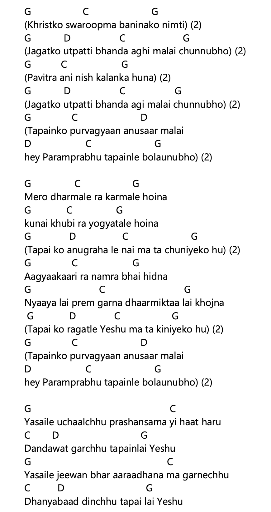
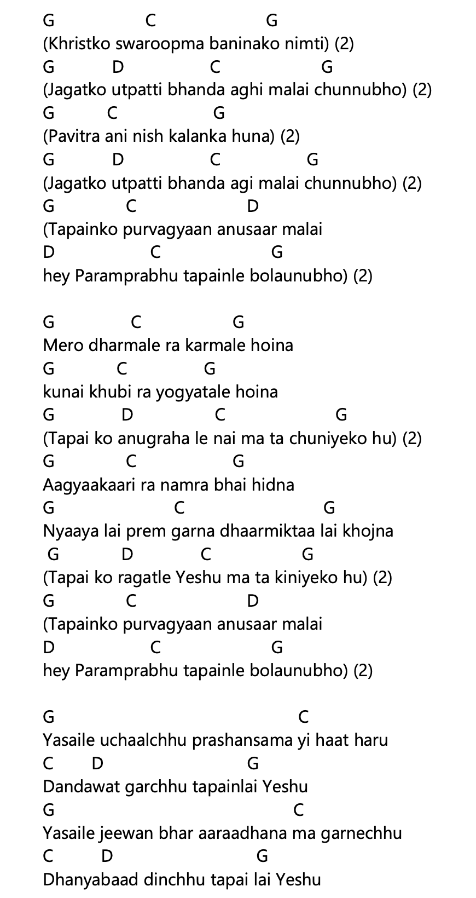

नेपाली Lyrics (Copyable)
(ख्रीष्टको स्वरूपमा बनिनको निम्ति ) २ (जगतको उत्पतिभन्दा अगि मलाई चुन्नुभो) २
(पवित्र अनि निश्कलंक हुन) २ (जगतको उत्पतिभन्दा अगि मलाई चुन्नुभो) २
(तपाईको पूर्वज्ञान अनुसार मलाई हे परमप्रभु तपाईले बोलाउनुभो) २
मेरो धर्मले र कर्मले होइन कुनै खुबी र योग्यताले होइन (तपाईको अनुग्रहले नै म त चुनिएको हुँ) २
आज्ञाकारी र नम्र भइ हिँड्न न्यायलाई प्रेम गर्न धार्मिक्तालाई खोज्न (तपाईको रगतले येशू म त किनिएको हुँ) २
(तपाईको पूर्वज्ञान अनुसार मलाई हे परमप्रभु तपाईले बोलाउनुभो ) २
यसैले उचाल्छु प्रशंसामा यी हातहरू दण्डवत गर्छु तपाईलाई येशू
यसैले जीवनभर आराधना म गर्नेछु धन्यवाद दिन्छु तपाईलाई येशू
 
